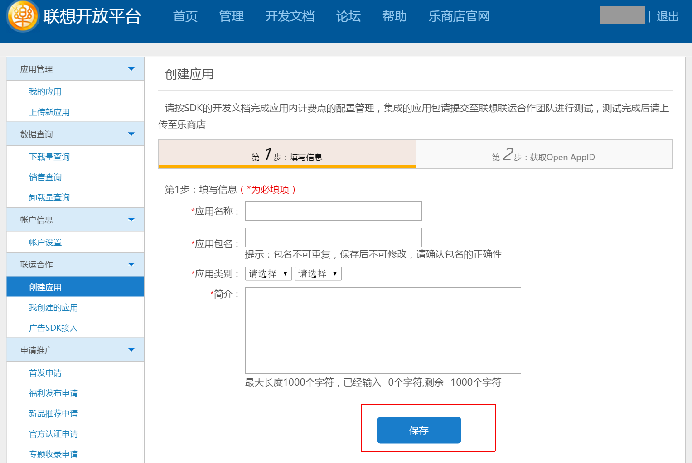
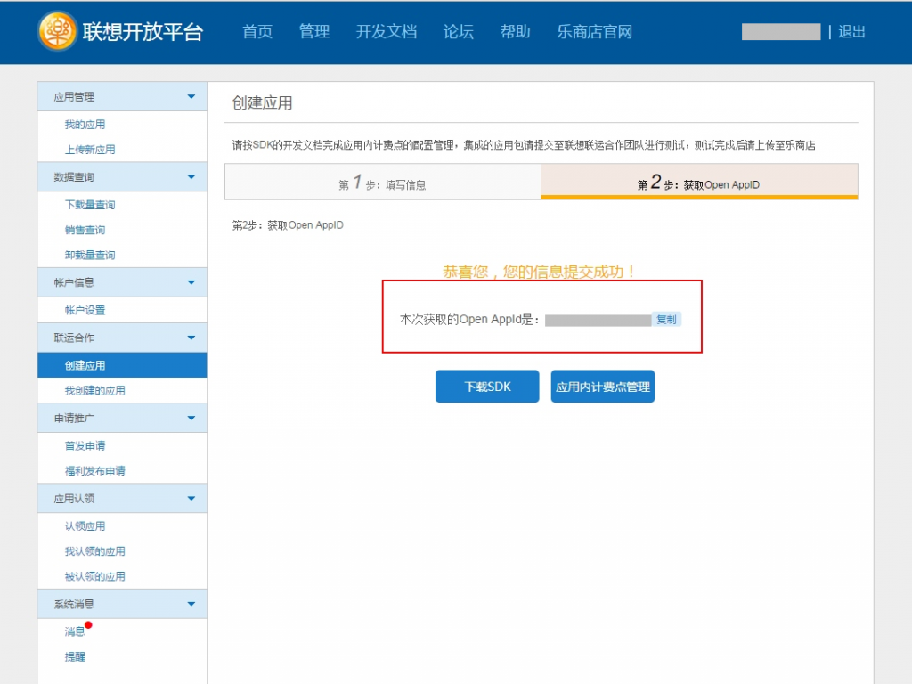
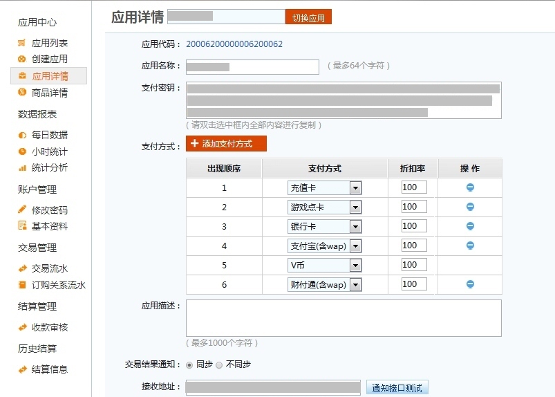
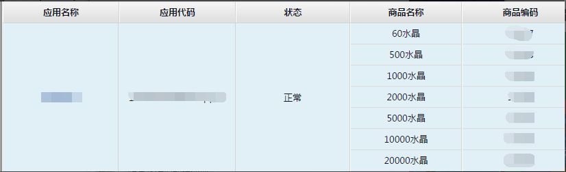
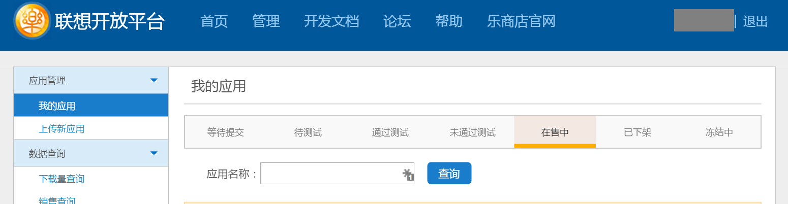

联想官方后台地址：https://passport.lenovo.com/
西瓜SDK所需的参数Open AppID、AppKey、商品编码均在联想后台获取。
获取参数步骤：1. 注册开发者账号；
2. 登录联想渠道后台，点击“管理”，进入该页面，然后点击“创建应用”；

3. 获取Open AppId；

4. AppKey在计费系统后台获取，在这里需要点击“应用内计费点管理”就可以跳入下一个界面，这样就可以查看所有的参数 ；
5. 进入联想计费系统后台，进入应用中心–>应用详情，查看参数，如下图所示：

6. 商品ID需要在商品详情中申请商品，请申请代币，计费方式选择“开放价格”，申请好之后将对应的商品编码填配置到西瓜后台；

7. 游戏在渠道有如下几种状态：等待提交、待测试、通过测试、未通过测试、在售中、已下架和冻结中7个状态。
